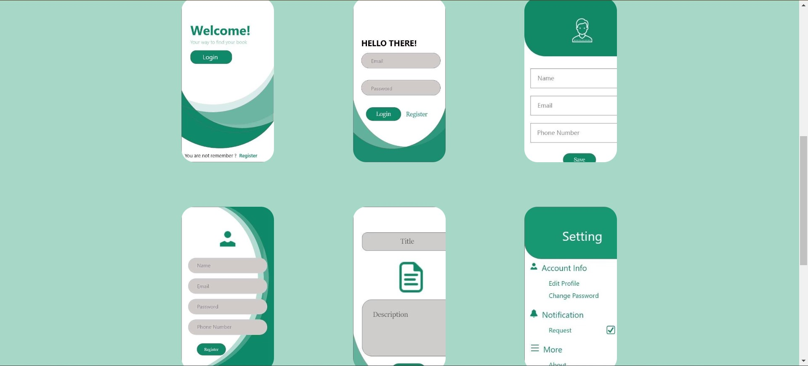

This is a book renting application using android studio where you can rent books and other university colleges return them after a certain period of time.
The Secret Diary program is a secure and private digital diary application designed to provide a safe space for individuals to record their personal thoughts, feelings, and experiences. It offers an electronic alternative to traditional paper diaries, providing convenience, privacy, and organization.
Visual noval game you meet a woman on your way for a work meeting She tries to pull out her laptop and drops it on the floor and you start talking with here the game is choices game every choice you make lead to different event the game is simple i hope you like it.

The Monster Card Game is an interactive digital card game where players collect and battle with a variety of unique and powerful monsters. The game is designed for both single-player and multiplayer modes, offering different gameplay experiences. In the game, players start by creating their own personalized deck of monster cards. Each monster card represents a different creature with its own set of abilities, stats, and attributes. The cards are beautifully illustrated, bringing the monsters to life on the screen. Players can acquire new cards by exploring the game world, completing quests, or trading with other players. As they progress, players have the opportunity to unlock rare and legendary monster cards, which can significantly enhance their deck's strength and strategic options. The gameplay revolves around tactical battles between players' monster cards. Each player takes turns deploying their monsters and strategically using their abilities to attack, defend, or support their team. The outcome of battles depends on a combination of card attributes, strategy, and a bit of luck.

Simple OOP program create player character, vampires and orcs.
Tweet DB program designed to manage and store tweet data , retrieve information (sample of how tweet can be store in the database).

To-do list manager is a porgram that help you stay organized, increase productivity, and effectively manage your tasks and projects.